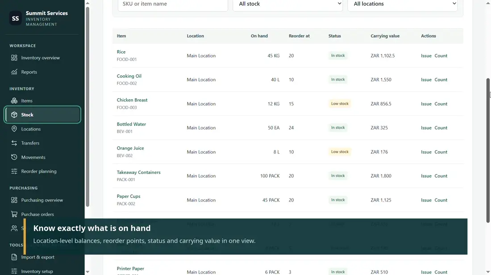
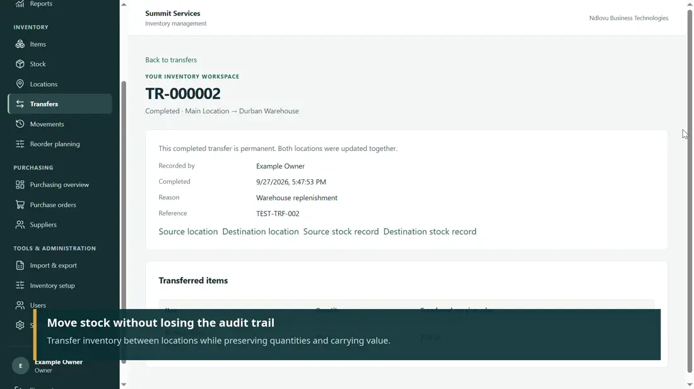
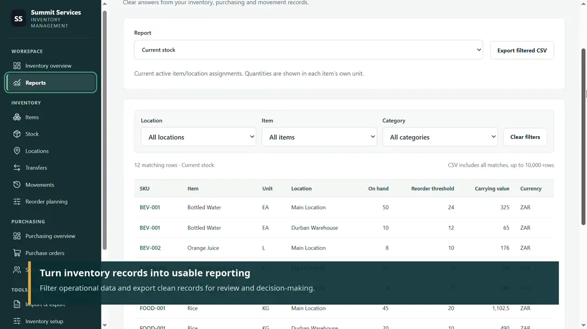

Record authoritative stock movements
Receipts, issues, counts and transfers go through backend stock services. Movement history remains traceable, and quantities and carrying values use decimal arithmetic.
I built an inventory and purchasing workspace where every stock balance can be explained by recorded operations. My focus was to make receipts, issues and transfers consistent under retries, failures and concurrent activity.
A quantity on screen cannot explain whether stock was received, issued, adjusted or transferred. A retried request could create a duplicate movement, while a partially completed transfer could leave two locations with inconsistent balances.
Purchasing and replenishment introduce more points where quantities, supplier records and stock history must agree.
The walkthrough follows inventory overview, stock by location, reorder planning, purchase orders, receiving, transfers, suppliers and reporting.



Receipts, issues, counts and transfers go through backend stock services. Movement history remains traceable, and quantities and carrying values use decimal arithmetic.
A location transfer posts both ledger legs within one database transaction and carries the exact value removed from the source into the destination.
Idempotency keys, request fingerprints and collision checks prevent repeated or unrelated operations from silently creating duplicate stock movements.
Company-scoped server authorization, role-limited cost fields and PostgreSQL locking protect sensitive operations from cross-tenant access and conflicting writes.
Technology: Python · FastAPI · SQLAlchemy · PostgreSQL · React · TypeScript · TanStack Query · Pytest · Vitest
The transfer service ties source and destination ledger postings together. A failed posting is rolled back, rather than leaving only one side applied.
An identical retry resolves to its existing transfer; reusing the key with different details returns a conflict. Unrelated ledger-key collisions are also rejected.
Source-level tests cover insufficient stock, foreign-company access, forced persistence failure and PostgreSQL concurrency. The recorded audit reports backend, frontend and fixture-based browser checks; I have not rerun them here.
I needed a multi-location transfer to conserve both quantity and carrying value without double posting. I reused the authoritative stock service for both legs, with a single transaction, idempotency fingerprint and exact value propagation.
Before production deployment, I would verify real browser-to-backend workflows, database restore/recovery, browser session controls and dependency pinning. Company-wide locking is correct for the current design but may need to become more granular as write traffic grows.
The implementation is maintained privately by Ndlovu Business Technologies. The portfolio presents the engineering work without distributing the proprietary source.